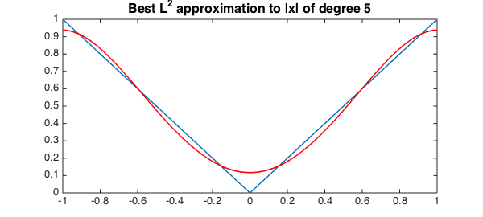
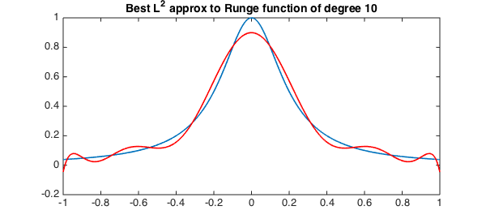
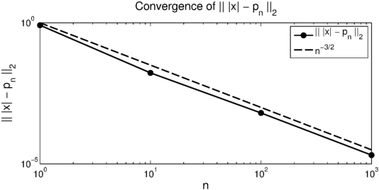

LW = 'linewidth'; lw = 1.6; MS = 'markersize'; FS = 'Fontsize'; fs = 16;
Least-squares approximation
If $f:[-1,1]\rightarrow R$ is an $L^2$-integrable function, then its least-squares or best $L^2$ approximation of degree $n$ is the polynomial $p_n$ of degree at most $n$ such that
$$ \| f - p_n \|_2 = \mbox{minimum}. $$
A good introduction to $L^2$ approximations can be found in [2]. The polyfit command in Chebfun returns the best $L^2$ approximation of a given degree to a chebfun:
help chebfun/polyfit
POLYFIT Fit polynomial to a CHEBFUN.
F = POLYFIT(Y, N) returns a CHEBFUN F corresponding to the polynomial of
degree N that fits the CHEBFUN Y in the least-squares sense.
If Y is a global polynomial of degree n then this code has an O(n (log n)^2)
complexity. If Y is piecewise polynomial then it has an O(n^2) complexity.
F = POLYFIT(X, Y, N, D), where D is a DOMAIN object, returns a CHEBFUN F on
the domain D which corresponds to the polynomial of degree N that fits the
data (X, Y) in the least-squares sense. X should be a real-valued column
vector and Y should be a matrix with size(Y,1) = size(X,1).
F = POLYFIT(Y, N) where Y is represented as a periodic TRIGFUN object
returns the degree N trigonometric polynomial fit of length 2N+1.
Note CHEBFUN/POLYFIT does not not support more than one output argument in
the way that MATLAB/POLYFIT does.
See also INTERP1.
The coefficients of $p_n$ in the Legendre basis can be computed by truncating the Legendre expansion for $f$ after $n+1$ terms. For example,
n = 5; x = chebfun('x');
f = abs(x);
P = legpoly(0:n,[-1,1],'norm'); % Legendre-Vandermonde matrix
cleg = P'*f; % compute Legendre coefficients
pn = P*cleg; % form chebfun of best L^2 approximation
plot(f,LW,lw), hold on, plot(pn,'r',LW,lw)
title('Best L^2 approximation to |x| of degree 5','fontsize',16), hold off

This approach works well, but requires $O(n^2)$ operations to compute the Legendre coefficients with a relatively large constant. This was the algorithm using in Chebfun's polyfit command for many years, but was changed last week.
polyfit using fast Chebyshev-Legendre transform
Recently, the command cheb2leg was added in Chebfun, which converts a vector of Chebyshev coefficients (of the first kind) to Legendre coefficients in $O(n(\log n)^2/\log\log n)$ operations [1,3]. The command leg2cheb is its inverse. To compute the Legendre expansion of a function (accurate to machine precision) we can first compute its Chebyshev expansion and then use cheb2leg. Chebfun already computes the Chebyshev expansion of a function that is accurate to machine precision. Therefore, here is another way to compute the best approximation of a smooth function via cheb2leg:
n = 10;
f = 1./(1+25*x.^2); % Runge function
ccheb = chebcoeffs(f); % get the Chebyshev coefficients of f
cleg = cheb2leg(ccheb); % convert Cheb coeffs of f to Leg coeffs
cleg = cleg(1:(n+1)); % truncate
ccheb = leg2cheb(cleg); % convert them back to form a chebfun
pn = chebfun(ccheb,'coeffs'); % form a chebfun
plot(f,LW,lw), hold on, plot(pn,'r',LW,lw)
title('Best L^2 approx to Runge function of degree 10',FS,14), hold off

This is the algorithm that is used in Chebfun's polyfit, as of today. So we can obtain the same result from the code:
n = 10;
f = 1./(1+25*x.^2); % Runge function
pn = polyfit(f,n);
plot(f,LW,lw), hold on, plot(pn,'r',LW,lw)
title('Best L^2 approx to Runge function of degree 10',FS,14), hold off

High-degree best $L^2$ approximation for smooth functions
The fast algorithms now employed by polyfit enable us to compute very high degree $L^2$ approximations.
n = 1e4;
f = 1./(1+1e6*x.^2); % Runge function
s = tic; pn = polyfit(f,n); t = toc(s);
fprintf('L^2 error is %1.3e\n',norm(f - pn))
fprintf('L^2 approximation of degree %u in t = %1.3f\n',n,t)
L^2 error is 1.797e-06 L^2 approximation of degree 10000 in t = 0.995
Piecewise smooth functions
Computing the Legendre coefficients for piecewise smooth functions is a little trickier. The Legendre coefficients are computed by quadrature rules and then a chebfun object is constructed via Chebyshev coefficients computed using the cheb2leg command. The algorithm for piecewise smooth function requires $O(n^2)$ operations, but the implicit constant is much smaller. Here is the best $L^2$-approximation to the piecewise smooth absolute value function.
f = abs(x);
nn = 10.^(0:3);
j=1;
for n = nn
pn = polyfit(f, n);
err(j) = norm(f - pn);
j = j+1;
end
loglog(nn, err,'k.-',LW,lw,MS,24), hold on
loglog(nn,nn.^(-3/2),'k--',LW,lw)
legend('|| |x| - p_n ||_2','n^{-3/2}')
xlabel('n',FS,fs), ylabel('|| |x| - p_n ||_2',FS,fs)
title('Convergence of || |x| - p_n ||_2',FS,fs)

References
-
N. Hale and A. Townsend, A fast, simple, and stable Chebyshev-Legendre transform using an asymptotic formula, SIAM Journal on Scientific Computing, 32 (2014), A148-A167.
-
M. Powell, Approximation Theory and Methods, Cambridge University Press, 1981.
-
A. Townsend and N. Hale, A fast Chebyshev-Legendre transform, Chebfun Example, August 2013.